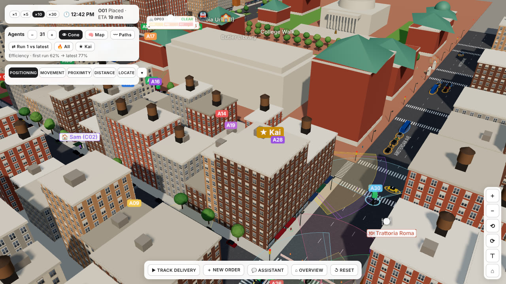
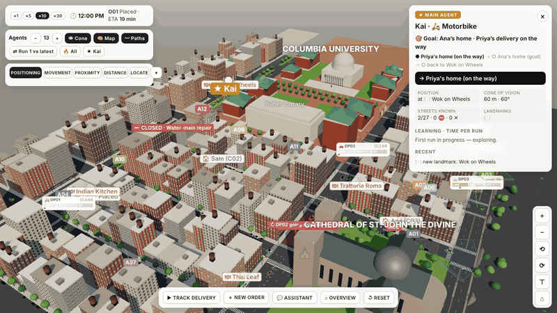
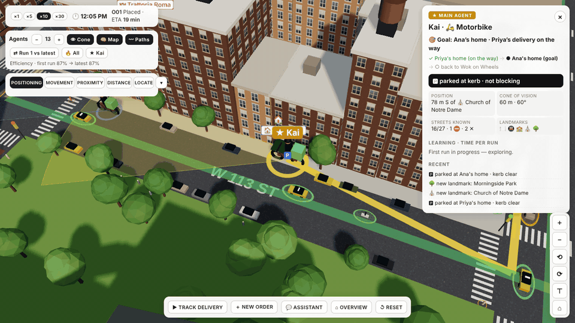
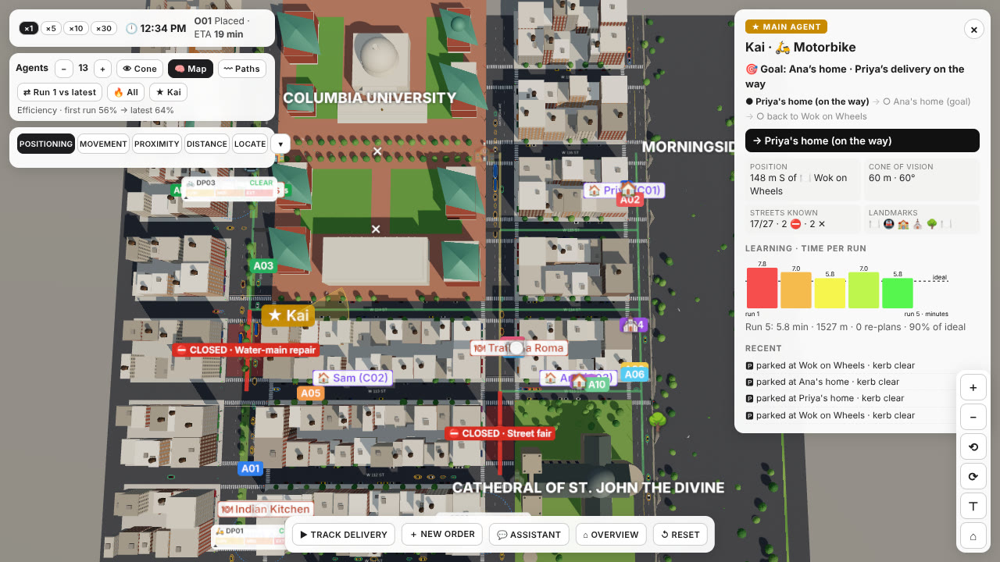
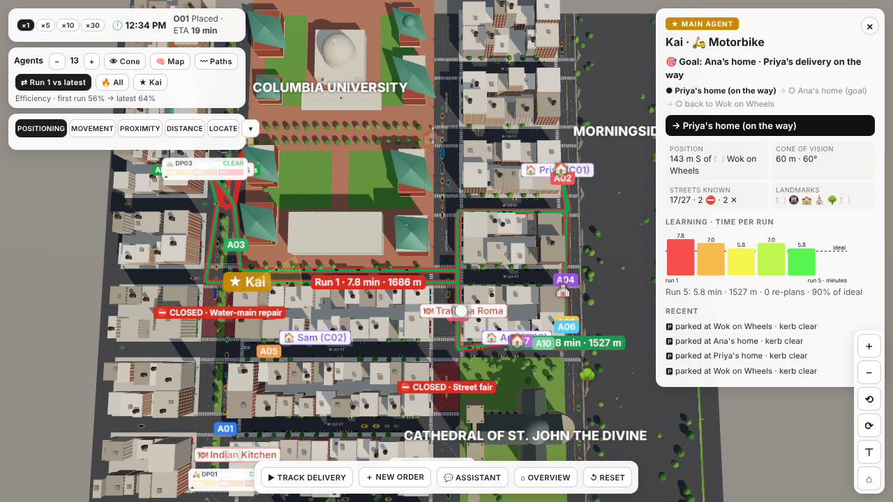
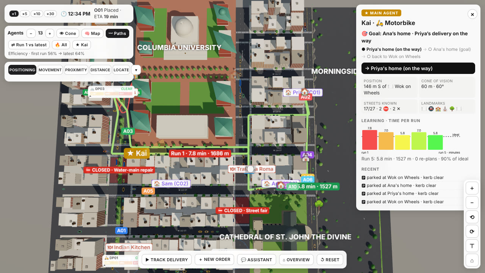
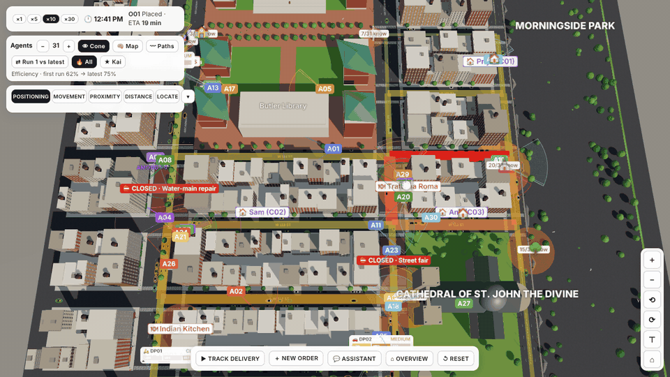

Spatial AI + Computing · Columbia GSAPP
A delivery rider who learns Morningside Heights by riding it

GOAL · Ana’s home, with Priya’s delivery on the way, then back to Wok on Wheels
START · knows only what it can see from the truck. No route is given
DEAD END · tries W 116th St: College Walk, no road
RE-PLAN · on its own map, by W 114th St
It also picks the order of the two deliveries itself.

MOTORBIKE · 60 m · 60°
CAR · 45 m · 90°
E-BIKE · 35 m · 120°
Buildings block it. Through it an agent finds closures, dead ends, one-way signs, landmarks and free kerb space.

GREEN · streets it has seen
⛔ / ✕ · closures and streets with no road
P · kerb spots it parked in
LANDMARKS · restaurants, churches, schools, the park
Its position is told by its own landmarks: “78 m S of the Church of Notre Dame”.

RUN 1 · 7.8 min · 1,686 m. Detours up Broadway to the campus streets
RUN 5 · 5.8 min · 1,527 m. Straight along W 114th St, no re-plans
It now skips the dead ends, finds doors without searching and parks in spots it remembers.

PATHS · all of Kai’s runs, oldest red, newest green
CHART · minutes per run: 7.8, 7.0, 5.8, 7.0, 5.8
Run 4 took the same route as run 3; the extra time is traffic.

On the move
Keeps a gap behind agents and cars in its lane
Waits for people crossing ahead
Stops at red lights
Parking
At the kerb, at least 16 m from a crossing
Never in a doorway
Never against another parked agent
STREET HEAT · the streets all agents use most, thick and orange
LANDMARK RINGS · how many agents know each landmark
Each courier carries two orders a run and learns on its own, like Kai.

ishika100603.github.io/Spatial_ai/food-delivery-3d.html
Justin & Ishika · Spatial AI + Computing · Columbia GSAPP